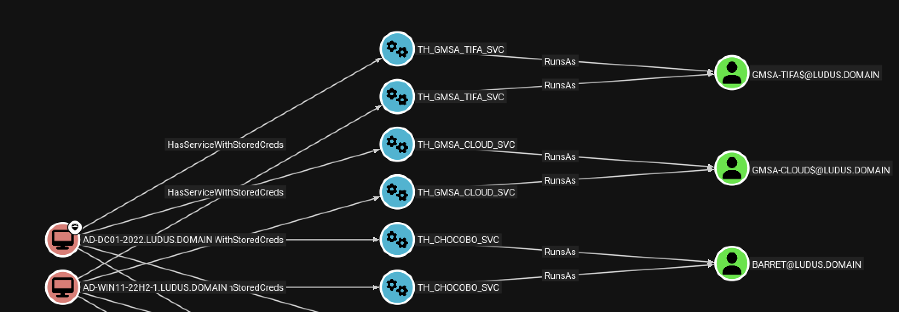
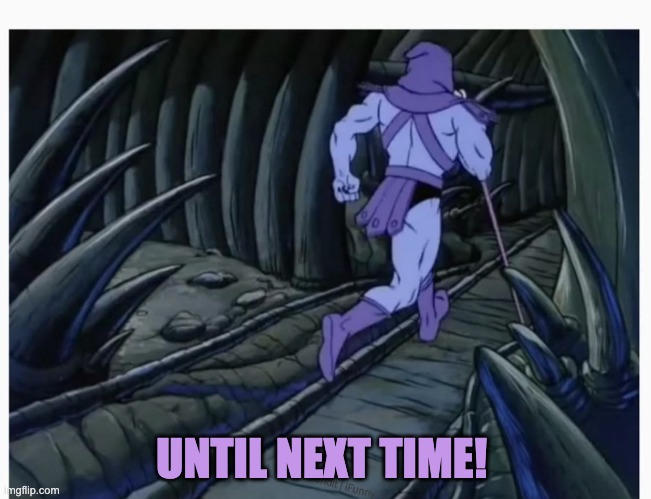

closing a chapter: SO-CON, taskhound updates and more microsoft shenanigans.
# TL;DR
I promise this is the last TaskHound blog post. Three threads in one: what happened at SO-CON 2026 (my first ever conference talk), complete with imposter syndrome and a wireguard meltdown mid-demo. TaskHound updates since Part 2 (service enumeration and a new BloodHound edge); and the story of the "TaskHound bug" that turned out to be Microsoft's own example pages quietly disagreeing with the spec for two decades.
Also: the talk is up on YouTube, and I rambled about how TaskHound came to be on the Know Your Adversary podcast over at SpecterOps.
## previously on taskhound...
If you haven't been here before: Part 1 introduced the tool. Part 2 rebuilt it from the ground up after the first release disassembled itself the moment it touched real corporate environments. This post closes the trilogy. After this I promise to nag you about other things instead.
## the talk: SO-CON 2026
### imposter syndrome, the genuine kind
I always thought of myself as a reasonably charismatic lil' fella. Telling stories, getting laughs, not a problem. Then I got my SO-CON session approved and saw the speaker lineup. Elad Shamir (@elad_shamir), Will Schroeder (@harmj0y), Jim Sykora (@JimSycurity) and many more. Names I'd been reading research from for years. And then, somewhere on that list: me. The guy who randomly stumbled into infosec not even 5 years ago.
Not the everyday "am I good enough" flavour. The "did a misclick get me this slot" flavour.
I'd love to tell you that feeling went away once I got there. It didn't. Honestly? Still hasn't fully. But what did happen, and what caught me completely off guard, was the hospitality. The SO-CON crowd, speakers, specters, attendees, treated me like an equal. Not "the german dude with the small tool". Like a peer. That kind of welcome doesn't fix imposter syndrome but it does make it weirdly survivable.
### the opening line that landed
I had a hunch the talk would either click or die within the first ninety seconds. So I led with the only claim that felt unimpeachable to me:
"Ever since I started paying attention (and using TaskHound) my team has not had a single engagement where overprivileged or misconfigured scheduled tasks weren't a problem. Not a single one."
That one landed cleanly. Heads nodded. That's the moment I knew the talk wasn't going to be a forty-minute exercise in pretending I belonged. The audience was with me. They've been there.
### the demo gods strike (and then bless me)
You know how every conference talk has that one slide where the speaker says "DEMO TIME!" and you can feel the crowd already grimacing on their behalf? Yeah.
My lab was supposed to be reachable over WireGuard. WireGuard apparently had other plans. Specifically: the conference venue's captive-portal Wi-Fi had very strong opinions about whether a UDP tunnel should be allowed to exist. (Spoiler: no. Not after sleep and re-waking the laptop) Just before the demo, the connection died. Everything I'd staged back home, the lab, the pre-saved queries, all of it... gone.
Overprepped as I was I had a fallback. A local lab on the presentation laptop. Albeit a bit smaller and the burner laptop clearly struggled to even host a single Windows server, but it worked... kind of. By some miracle it held together for the next ninety seconds. What I forgot: pre-saving the one cypher query I needed. So I'm standing there, in front of a live audience, with a working lab but no query.
Cool, cool, cool. We're just writing it live. No big deal.
I opened the cypher tab in BloodHound and felt like a caveman typing the query. Lo and behold, it worked first time! The audience even applauded. The thing that started as the demo gods striking down my lab ended up being the moment I felt somewhat confident up there. So: thank you, captive-portal Wi-Fi. You shouldn't exist, but in this one specific instance, you made me look better than I deserved.
## prep time
### the original outline was a rant
I started prepping in January. The working title was nothing to be proud of and will not be named here but accurately described my emotional state at the time. The outline had thirty-ish slides of unfiltered grievance against Microsoft identity resolution. Comedy beats, Memes and the likes.
It would have been a fun rant over a beer or two. It would not have been a good talk.
What turned it from rant into talk was my mentor and specter Jonas Bülow Knudsen (@Jonas_B_K). Over multiple QA rounds, he helped me to reshape the talk into something that wouldn't just cause laughter but actually teach something. If you happen to read this: Thank you! Seriously, you rock!
Same energy to Hunter (@hunterinosec) for always listening to my ramblings, reviewing slides, and sitting through rehearsals without his ears bleeding (or at least not admitting it lol). Awesome dude, and one of the few people I'd actually consider something that resembles a friend in this space.
### overprepped, gloriously
Aside from the demo blooper, everything else landed roughly as rehearsed. Which is sus, because in my head this session was going to derail in a dozen creative ways and I'd be lucky to survive any of them. The truth is I was so overprepped that there was almost no scenario the rehearsal didn't cover. Every meme had a timer. Every fallback had a fallback.
People will tell you not to overprep. I think they're wrong. Overprep. The buffer is what lets you survive the things you couldn't overprep for. Like, say... your VPN dying.
Unless you're a freestyling savant. One of the other SO-CON speakers casually told me: "I have a few talks next week. I have slides for... uhm... two, I guess?" Built different. The rest of us should overprep.
## the seed jonas planted
In the final QA session, Jonas (yes, the same one) hit me with this gem:
"TaskHound is really cool. But have you thought about doing the same for services?"
My initial reaction was, and I quote, STOP PLANTING IDEAS IN MY HEAD REEEEEEE. A week later, of course, I was in a branch called feature/service-enumeration. Because that's how this works.
And with this: Welcome to what happened to TaskHound since Part2 (Still no modularization, sorry!)
## services: same attack surface, different hat
Quick note before the deep-dive: the value here isn't credential extraction. secretsdump handles that part fine and you don't need TaskHound for it. The value is what the credentials are sitting under: an enterprise service running as a domain account, often privileged, often undocumented, frequently forgotten by whoever set it up. Map them across an engagement and you have an attack surface similar to the one exposed with SchedTasks.
TaskHound is already touching the LSA (it needs DPAPI_SYSTEM to decrypt task creds), so grabbing service-backed LSA secrets while we're there is essentially free. But the interesting data (which services run as which domain account on which host) doesn't come from LSA at all. It comes from the Service Control Manager over SMB. LSA is where we go for the password later, if we want it. The graph is the point.
### how SVCCTL actually works (and why it hurts)
The Service Control Manager exposes a remote interface over \pipe\svcctl. Same pipe sc.exe uses when you query a remote box. TaskHound binds to it on each target using the SMB connection that's already open, then walks a two-phase enumeration:
- Phase 1
REnumServicesStatusW: One RPC call. Returns every service on the host with its name, display name, current state, and service type. Crucially: not the account it runs as. Not the binary path. - Phase 2
RQueryServiceConfigW: For every service you actually care about, open a per-service handle viaROpenServiceWand callRQueryServiceConfigWto get the full config. That's two RPC round-trips per service.
Do the math. A default Windows 11 box has ~300 services. Phase 2 unfiltered means 600+ RPC calls per host. Multiply that by every host in the engagement. The first lab scan with service enumeration enabled took minutes. Minutes. In a five-box lab. You can imagine what that would look like in a real environment.
### the 290-of-300 problem
The good news is the noise is incredibly predictable. Of the ~300 services on a typical Windows box, ~290 of them run as one of:
LocalSystem/NT AUTHORITY\SYSTEMand friendsNT AUTHORITY\LocalService(and the space-separated and slash-separated variants)NT AUTHORITY\NetworkService(same dance)NT SERVICE\*virtual service accounts; one per service, no real credentials in LSA- Empty/null start name (defaults to LocalSystem anyway)
So TaskHound now ships a static skip-list of well-known built-in service names plus a runtime filter that drops anything matching a built-in account principal and adds them to the cache to skip them for the next host. Local accounts get filtered too via SAMR enumeration of the host's local user database. What's left is the interesting set: unique services per host, all running as actual domain accounts or unrecognized identities that warrant a closer look.
### showing it in BloodHound
The findings ship as OpenGraph nodes and edges. Each enumerated service becomes a WindowsService node, the host gets a new HasServiceWithStoredCreds edge pointing at it, and the service node gets a RunsAs edge to whatever domain principal owns it (user, gMSA, MSA). One Cypher query gives you every service-account-on-domain-account relationship in the graph:
MATCH p = (:Computer)-[:HasServiceWithStoredCreds]->(:WindowsService)-[:RunsAs]->(:User)
RETURN p
LIMIT 1000

This turns answering the question "which services on which hosts could give me which domain accounts" from being something you grep for in a 300-line text dump to something you just look at. The targets in there are the ones worth the LSA round-trip.
## the bug that wasn't: microsoft's 6th UserId
### the symptom
For a long time (months to be fair) I had a recurring issue with TaskHound's output. Specifically, our consulting department (the people who get the engagement report and have to fix stuff we break together with the customer) kept telling me the same thing: some tasks were being flagged as TIER-0 that very clearly weren't running as a domain admin. They were running as local Administrator.
My initial workaround was a band-aid. I made an explicit decision: I'd rather flag a false-positive TIER-0 than skip a task and miss a potential privesc. So when TaskHound saw a bare unqualified username like Administrator in a task XML, no .\ prefix, no domain prefix, no SID, it would assume the worst and tag it as TIER-0. Better to over-flag than miss. (This has since been changed and now resolves properly. But that's getting ahead of the story.)
What kept eating at me was: why is this happening in the first place? The MS-TSCH specification (§2.5.6) defines exactly five ways to specify a UserId in the <Principal> element (we already covered that earlier in the series, but here's a quick refresher):
| # | Format | Example |
|---|---|---|
| 1 | NetBIOS or FQDN domain\username | CORP\svc_backup |
| 2 | UPN username@domain | svc_backup@corp.local |
| 3 | Dot-local .\username | .\localadmin |
| 4 | Built-in service accounts | LOCAL SYSTEM, NETWORK SERVICE |
| 5 | SID string | S-1-5-21-1234567890-... |
Five forms. Clearly documented. Explicitly listed. I built TaskHound's parser around exactly these five. So when production environments kept handing back this:
<Principals>
<Principal>
<UserId>Administrator</UserId>
<LogonType>InteractiveToken</LogonType>
</Principal>
</Principals>...I figured someone must've hand-edited an XML and not known better. Bare Administrator. No prefix. No suffix. No qualifier.
Surely admins were just being admins, right? This was just hand-rolled garbage.
Nope.
### meet microsoft
Buckle up. Microsoft's own official Win32 documentation, their Daily Trigger Example (XML) page (among others), contains this:
<Principals>
<Principal>
<UserId>Administrator</UserId>
<LogonType>InteractiveToken</LogonType>
</Principal>
</Principals>That's right. The same Microsoft that wrote MS-TSCH §2.5.6 listing five canonical forms is using a sixth, unlisted one in their own example code. Spec page enumerates the five and shows local identities with the explicit .\ prefix. Example page on the same documentation site uses bare Administrator. Two doc pages, one team, one product, opposite advice. For about twenty years.
The C++ example on the sister page is even better. The official Daily Trigger Example (C++) ends with a credential prompt that prefills the username field with TEXT(""). Empty string. No .\ hint. No DOMAIN\ hint. Then it calls CredUIPromptForCredentialsW with three flags:
dwErr = CredUIPromptForCredentials(
&cui, TEXT(""), NULL, 0,
pszName, CREDUI_MAX_USERNAME_LENGTH,
pszPwd, CREDUI_MAX_PASSWORD_LENGTH,
&fSave,
CREDUI_FLAGS_GENERIC_CREDENTIALS |
CREDUI_FLAGS_ALWAYS_SHOW_UI |
CREDUI_FLAGS_DO_NOT_PERSIST);And buried in the Remarks section of the official CredUIPromptForCredentialsW docs:
"If CREDUI_FLAGS_GENERIC_CREDENTIALS is specified and neither CREDUI_FLAGS_COMPLETE_USERNAME nor CREDUI_FLAGS_VALIDATE_USERNAME is specified, the typed name is not syntax checked in any way."
The example uses the first flag and neither sibling. The credui prompt accepts whatever the admin types with no syntax check at the dialog. RegisterTaskDefinition does validate downstream: the username has to resolve through Windows' authentication stack via LookupAccountName, which for unqualified strings walks what Microsoft calls the "isolated-name" resolution chain (well-known SIDs first, then the local SAM, then the primary domain, then trusted domains). The password has to authenticate. Completely-bogus garbage fails registration with ERROR_LOGON_FAILURE before it touches disk (thank god). A typed Administrator though matches at step 2 (the local SAM), the password validates against the built-in, and the XML ends up with <UserId>Administrator</UserId> on disk. No prefix, no qualifier. Bonus oddity: SCHED_S_BATCH_LOGON_PROBLEM is a success return code, so a task can be registered even when the principal lacks SeBatchLogonRight and will silently fail to start, meaning "registered" doesn't imply "runnable". I think when doing these steps via the GUI you get a little popup saying that the account needs at least batch logon rights. Doesn't seem to be the case here or depends on how you want to handle the return code.
### the verdict
Documentation inconsistency, not a runtime bug. Three pieces fail to line up. The spec (MS-TSCH §2.5.6) lists exactly five valid UserId forms. The XSD schema backing that spec doesn't actually enforce them: UserId is type="nonEmptyString", so "lolomg" would validate as XML just fine. And the runtime validator doesn't enforce them either: LookupAccountName accepts the bare isolated form via its standard resolution chain, which is exactly why Microsoft's own example XMLs use it. The spec's five-form list is documentation of intent, not a gate any layer of the system actually checks against. Has been this way since at least Vista.
### being a petty german
Two PRs to the MicrosoftDocs/win32 repo:
- PR #2169: XML example now uses
.\Administrator, intro sentence rewritten to make it explicit the task runs as the local account. - PR #2170: C++ example swaps
CREDUI_FLAGS_GENERIC_CREDENTIALSforCREDUI_FLAGS_COMPLETE_USERNAME(forces syntax validation), and the prompt now tells the user to enter a qualified name.
Status: approved by a Microsoft maintainer. Who happens to be listed as ms.author on both of the target pages. So the page's listed author reviewed the fix, clicked Approve, and then (on both PRs, within seconds of clicking that button) posted this:
"I don't have perms to complete this. :("
Which is to say: the listed author of the affected pages agreed with the fix, formally approved it, and can't merge it. Not his fault, to be clear. Somewhere in Microsoft's permission structure the page author and the merge-button-holder are different humans, and I have a lot of sympathy for the guy who's listed as responsible for pages he apparently can't actually patch. I have left both PRs alone since. Not sure who escalates this and at this point I'm just enjoying the absurdity.
I have filed the entire situation under "things Microsoft will eventually correct as soon as someone with merge perms remembers this repo exists." Right next to "why does schtasks output different XML than Export-ScheduledTask?"
### what TaskHound does now
The original "flag it TIER-0 to be safe" behavior is gone. TaskHound now properly recognizes the isolated/bare name, resolves it the same way Windows does, and only tags it TIER-0 if the resolution actually lands on a TIER-0 principal. False positives that drove our consultants up the wall for months: fixed. The cost: a working knowledge of why Microsoft's documentation contradicts itself, which I will never be able to un-know.
## is taskhound done?
Probably not. I lie constantly about this.
There's still a backlog. The CLI modularization is still pending. Abuse-info integration with BloodHound nodes is half-finished and stuff keeps creeping up the priority queue when I'm sleep-deprived enough to think it sounds like a fun weekend.
That said: if you find a bug, file an issue. If you find a feature gap that hurts, file an issue. I will probably fix it. I always say I won't and then I always do. It's a problem.
## thank-yous
Closing this chapter means I owe a few people:
- SpecterOps for inviting me to SO-CON in the first place, for OpenGraph as a platform, and for the kind of community where you can lose your mind in the Slack and get useful answers within ten minutes. A couple of specific call-outs:
- Jonas, whose QA sessions turned a rant into a talk and whose offhand "have you considered services?" cost me weeks of my life. Worth it.
- Jared Atkinson, Justin Kohler, and the crew who turned "my hotel randomly cancelled 48 hours before the flight" into "sorted, you're staying here" within a day. I've never seen a team move that fast on a problem that wasn't theirs. Thanks!
- The SO-CON attendees for treating a first-timer like a peer, asking good questions, and laughing at the right moments. Including the moment my VPN died and I had to freestyle stuff live. Especially that moment.
- ProSec for the room to grow, the support the moment my session got accepted, and being the kind of company that makes this work possible. Best gig in offsec.
- Caffeine as always.
## outro
Still no catchphrase. Maybe by Part 4. (There won't be a Part 4. Probably.)
TaskHound handles all six UserId forms now and can grab services if you like (and don't mind the SOC going bonkers). Go hunt creds :3.
